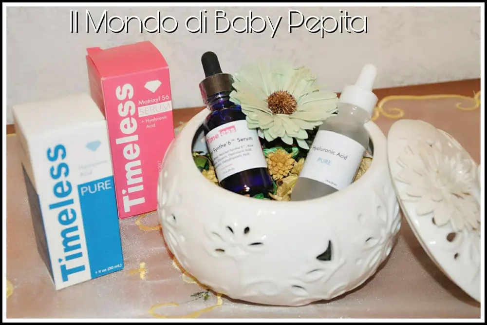
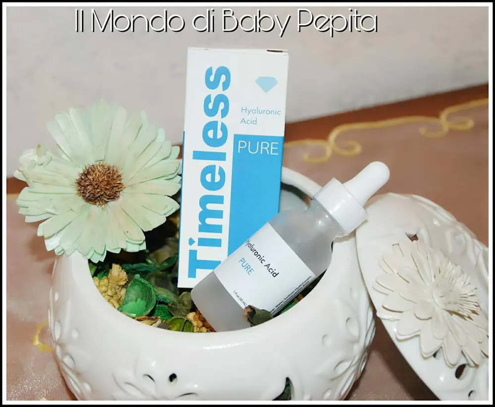
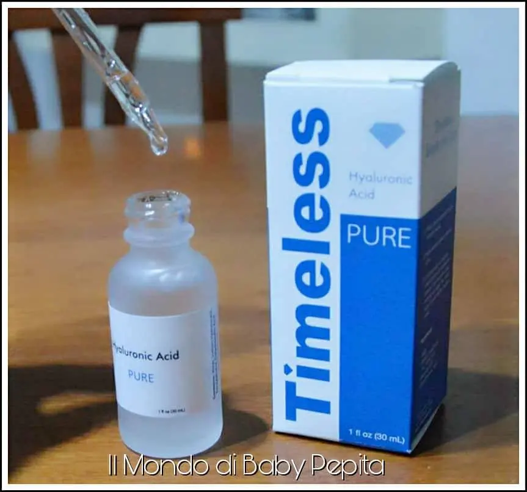
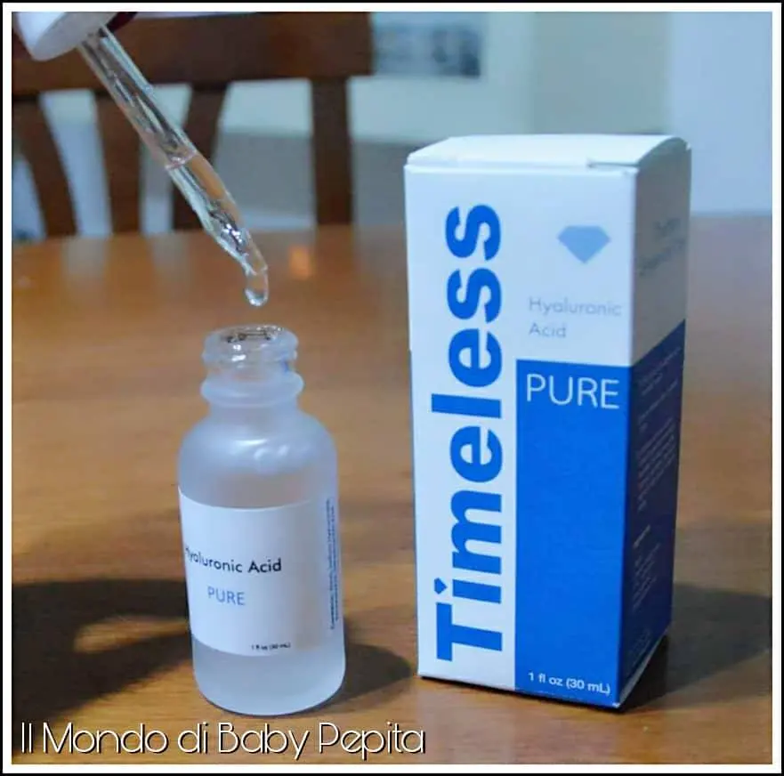
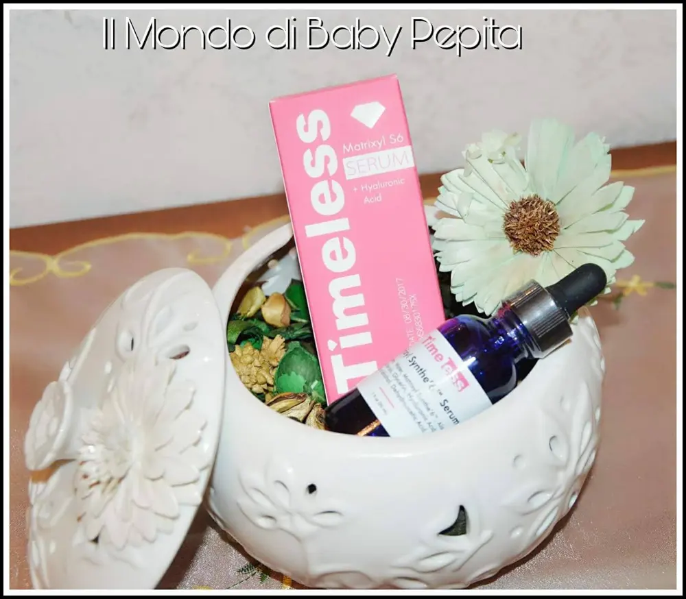
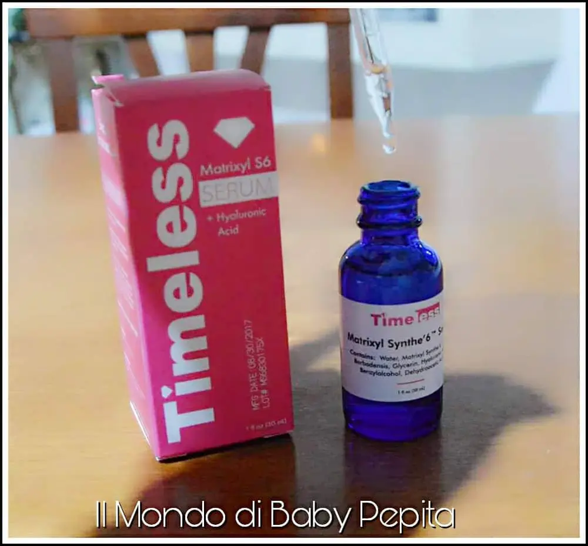
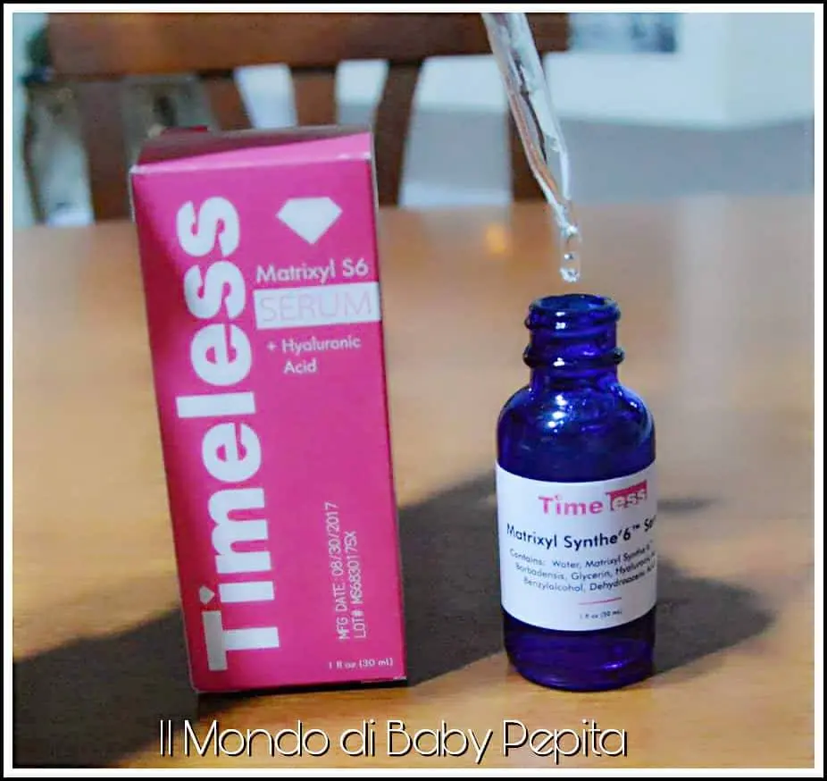
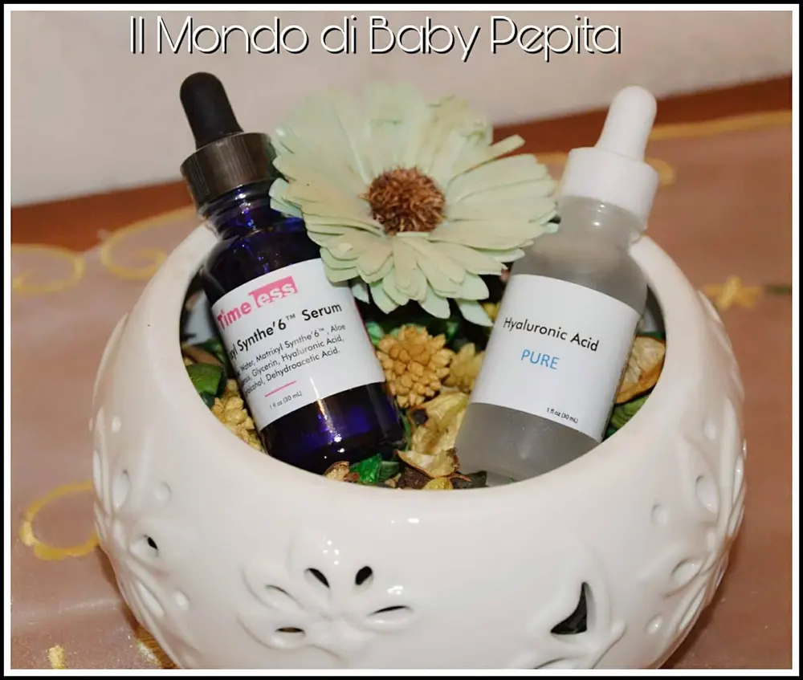

Siero: TIMELESS Skin Care
Ultimamente sono in voga i siero. Siero per macchie, siero per arrossamenti, per l'invecchiamento, per occhiaie.
Diciamo che siamo circondati da tanti prodotti per la pelle.Sono sempre esistiti in realtà ma tante volte non diamo importanza ad un siero, che va applicato con gocce ben dosate, quanto ad una crema che ci dà l'impressione che più ne mettiamo e meglio è (in quanti vi siete visti un questa cosa che ho detto? Ahahah).
Oggi il siero è diventato un must come trattamento di bellezza in verità, in quanto è l'elemento essenziale che tratta e cura la pelle.
Quindi non cosa da poco!La differenza che c'è con creme e gel è appunto, la crema notte e giorno è più indicata per una nutrizione ed istruzione mentre il siero contiene attivi in grado di trattare la zona e curare.
Quindi è per questo che usando un siero si schiariscono macchie, si ha più luminosità al viso ecc ecc.
Siero: Oggi voglio dunque parlarvi di 2 sieri per la pelle dell'azienda Timeless skin care.
La Timeless skin care è specializzata in prodotti per la cura della pelle, principalmente anti-invecchiamento, anti-rughe, trattamento per cicatrici e per acne.
Creano prodotti con ingredienti di qualità ad un prezzo accessibile a tutti perchè credono nell'efficacia di ogni singolo articolo.
Che ovviamente sono tutti naturali e senza parabeni, inutile dirlo.
Ho avuto modo di provare 2 prodotti:
• Hyaluronic Acid 100% pure.
• Mayrixyl S6 SERUM + Hyaluronic Acid.

HYALURONIC ACID 100 % PURE


Come da titolo si evince che è un siero a base di acido ialuronico.
L'acido ialuronico è efficace per idratare la pelle in modo del tutto naturale. Ciò che questo siero garantisce è pelle idratata e sempre morbida, pronta ad ogni evenienza. Con questo prodotto è possibile avere un aspetto più giovane.
Quando le cellule della pelle si riempiono nel momento in cui utilizziamo con frequenza questo siero, le rughe si ripresentano meno evidenti, di conseguenza danno un aspetto più giovane anche con i segni dell'età.
Non ha sostanze chimiche e questo è già un bel punto a suo favore in quanto possiamo sentirci del tutto sicuri di poterlo utilizzare senza nessun rischio.
Applicando qualche goccia in modo corretto, noterete subito che non unge e si asciuga velocemente aderendosi alla nostra pelle.
È inodore in quanto non ha né coloranti e ne tanto meno fragranze, proprio da garantire la purezza dell'acido.

Ingredienti: Acqua, ialuronato di sodio (1% puro 100%), benzilalcool, acido deidroacetico.
Scadenza: 2 anni dalla data di acquisto.
Prezzo: 8,85 $ che equivalgono a 5,86 €
MATEIXYL S6 SERUM + HYALURONIC ACID.


Questo siero contiene il Synthe'6 che sarebbe una potente proteina che garantiscono un'ottima nutrizione e ricostruzione della pelle.
È un prodotto realizzato per aiutare chi soffre di segni dell'invecchiamento stimolando sei principali componenti della matrice cutanea e della giunzione dermo-epidermica (collagene I, II, IV, acido ialuronico, fibronectina, laminato 5).
Utilizzato in modo frequente ricostruisce la pelle dov'è necessario, rendendola liscia, in particolare sulla fronte.
È possibile osservare come il siero agisce anche mentre lo si è in posa, infatti dovreste vedere la differenza già entro 2 giorni dall'utilizzo.
Dunque potrete notare già in breve tempo come le linee sottili e le rughe sul viso lentamente scompaiono nel tempo grazie ai prodotti naturali e le vitamine e minerali all'interno del siero.

Applicare 2-3 gocce sulle dita e massaggiare sulle zone desiderate e lasciarlo agire tutta la notte.
Prezzo: 24,95 $ che equivalgono a 16,54 €


Ovviamente il sito Timeless skin care vanta una gamma di prodotti diversi tutti naturali e prettamente per la cura della pelle tra creme, spray, sieri e altro.